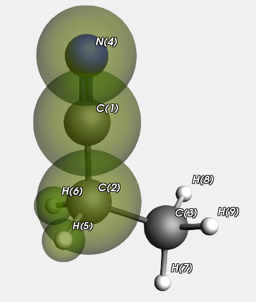

Example: The role of specifying the atom types¶
Now we look at a Propanenitrile molecule, the QM region is highlighted.
We run this with and without specifying the atom types on input. In principle this makes a difference for the MM type for atom “C(3)” in the MM sub calculation on atoms 3,7,8, and 9. If specified it will be C_3 (as it is in the whole Propanenitrile molecule), but if not it will be guessed as C_R. In practice there is no effect for this calculation.
Let us have a look at the report generated by the example, that pretty much explains what is done
Download report Propanenitrile.txt
We first check how bad the MM method is compared to the QM method for some distances in the QM region
Here are the distances (Angstrom) as obtained with a QM and an MM method
distance qm mm err(mm)
C(1)-C(2) 1.456 1.467 0.011
C(1)-N(4) 1.147 1.157 0.010
C(2)-H(5) 1.095 1.110 0.015
Can we get better results for the QM region with the hybrid engine?
Even though UFF has automatic atom typing, it still matters (in principle) whether we specify it on input or not
* Without typing for each region the types are automatically guessed
* With typing the types are always as on input (for all regions)
The only difference is in the C type for the MM region.
Here are the distances (Angstrom) as obtained with a QM and an Hybrid method without explicit typing
distance qm hybrid err(hybrid)
C(1)-C(2) 1.456 1.456 0.000
C(1)-N(4) 1.147 1.147 0.000
C(2)-H(5) 1.095 1.092 -0.003
Here are the distances (Angstrom) as obtained with a QM and an Hybrid method with explicit typing
distance qm hybrid err(hybrid)
C(1)-C(2) 1.456 1.456 0.000
C(1)-N(4) 1.147 1.147 0.000
C(2)-H(5) 1.095 1.092 -0.003
Here are some observations for this example
* The hybrid engine does better than pure MM
* The subtle issue whether or not we specify the types has negligible effect.
#!/bin/sh
export NSCM=1
for engine in dftb forcefield
do
export AMS_JOBNAME=$engine
rm -rf $AMS_JOBNAME.results
"$AMSBIN/ams" << eor
Task GeometryOptimization
System
Atoms
C -0.02116 1.01286 0.0 region=qm
C 0.01258 -0.45034 0.0 region=qm
C 1.44394 -1.0175 0.0
N -0.03362 2.17616 0.0 region=qm
H -0.54281 -0.80179 0.88302 region=qm
H -0.54281 -0.80179 -0.88302 region=qm
H 1.40659 -2.11445 0.0
H 1.99584 -0.68766 -0.88907
H 1.99584 -0.68766 0.88907
End
GuessBonds true
End
Engine $engine
EndEngine
eor
done
report=report.txt
printf "\nWe first check how bad the MM method is compared to the QM method for some distances in the QM region\n" > $report
bond1="C(1)-C(2)"
bond2="C(1)-N(4)"
bond3="C(2)-H(5)"
bond4="C(2)-C(3)"
aaa1qm=`$AMSBIN/amsreport dftb.results/dftb.rkf -r distance#1#2`
bbb1qm=`$AMSBIN/amsreport dftb.results/dftb.rkf -r distance#1#4`
ccc1qm=`$AMSBIN/amsreport dftb.results/dftb.rkf -r distance#2#5`
ddd1qm=`$AMSBIN/amsreport dftb.results/dftb.rkf -r distance#2#3`
aaa1mm=`$AMSBIN/amsreport forcefield.results/forcefield.rkf -r distance#1#2`
bbb1mm=`$AMSBIN/amsreport forcefield.results/forcefield.rkf -r distance#1#4`
ccc1mm=`$AMSBIN/amsreport forcefield.results/forcefield.rkf -r distance#2#5`
ddd1mm=`$AMSBIN/amsreport forcefield.results/forcefield.rkf -r distance#2#3`
errmma=`echo "$aaa1mm- $aaa1qm" | bc`
errmmb=`echo "$bbb1mm- $bbb1qm" | bc`
errmmc=`echo "$ccc1mm- $ccc1qm" | bc`
errmmd=`echo "$ddd1mm- $ddd1qm" | bc`
printf "\nHere are the distances (Angstrom) as obtained with a QM and an MM method\n" >> $report
printf "%10s %10s %10s %10s\n" "distance" "qm" "mm" "err(mm)">> $report
printf "%10s %10.3f %10.3f %10.3f\n" $bond1 $aaa1qm $aaa1mm $errmma >> $report
printf "%10s %10.3f %10.3f %10.3f\n" $bond2 $bbb1qm $bbb1mm $errmmb >> $report
printf "%10s %10.3f %10.3f %10.3f\n" $bond3 $ccc1qm $ccc1mm $errmmc >> $report
printf "\nCan we get better results for the QM region with the hybrid engine?\n" >> $report
printf "\nEven though UFF has automatic atom typing, it still matters (in principle) whether we specify it on input or not\n" >> $report
printf " * Without typing for each region the types are automatically guessed\n" >> $report
printf " * With typing the types are always as on input (for all regions)\n" >> $report
printf "\nThe only difference is in the C type for the MM region.\n" >>$report
export AMS_JOBNAME=hybrid.types=no
rm -rf $AMS_JOBNAME.results
"$AMSBIN/ams" << eor
Task GeometryOptimization
System
Atoms
C -0.02116 1.01286 0.0 region=qm
C 0.01258 -0.45034 0.0 region=qm
C 1.44394 -1.0175 0.0
N -0.03362 2.17616 0.0 region=qm
H -0.54281 -0.80179 0.88302 region=qm
H -0.54281 -0.80179 -0.88302 region=qm
H 1.40659 -2.11445 0.0
H 1.99584 -0.68766 -0.88907
H 1.99584 -0.68766 0.88907
End
GuessBonds true
End
Engine Hybrid
QMMM qmRegion=qm qmEngineID=dftb mmEngineID=forcefield
Engine DFTB
EndEngine
Engine ForceField
EndEngine
EndEngine
eor
aaa1hybrid=`$AMSBIN/amsreport $AMS_JOBNAME.results/hybrid.rkf -r distance#1#2`
bbb1hybrid=`$AMSBIN/amsreport $AMS_JOBNAME.results/hybrid.rkf -r distance#1#4`
ccc1hybrid=`$AMSBIN/amsreport $AMS_JOBNAME.results/hybrid.rkf -r distance#2#5`
ddd1hybrid=`$AMSBIN/amsreport $AMS_JOBNAME.results/hybrid.rkf -r distance#2#3`
errhybrida=`echo "$aaa1hybrid- $aaa1qm" | bc`
errhybridb=`echo "$bbb1hybrid- $bbb1qm" | bc`
errhybridc=`echo "$ccc1hybrid- $ccc1qm" | bc`
errhybridd=`echo "$ddd1hybrid- $ddd1qm" | bc`
printf "\nHere are the distances (Angstrom) as obtained with a QM and an Hybrid method without explicit typing\n" >> $report
printf "%10s %10s %10s %10s\n" "distance" "qm" "hybrid" "err(hybrid)">> $report
printf "%10s %10.3f %10.3f %10.3f\n" $bond1 $aaa1qm $aaa1hybrid $errhybrida >> $report
printf "%10s %10.3f %10.3f %10.3f\n" $bond2 $bbb1qm $bbb1hybrid $errhybridb >> $report
printf "%10s %10.3f %10.3f %10.3f\n" $bond3 $ccc1qm $ccc1hybrid $errhybridc >> $report
export AMS_JOBNAME=hybrid.types=yes
rm -rf $AMS_JOBNAME.results
"$AMSBIN/ams" << eor
Task GeometryOptimization
System
Atoms
C -0.02116 1.01286 0.0 region=qm
C 0.01258 -0.45034 0.0 region=qm
C 1.44394 -1.0175 0.0 region=mm
N -0.03362 2.17616 0.0 region=qm
H -0.54281 -0.80179 0.88302 region=qm
H -0.54281 -0.80179 -0.88302 region=qm
H 1.40659 -2.11445 0.0 region=mm
H 1.99584 -0.68766 -0.88907 region=mm
H 1.99584 -0.68766 0.88907 region=mm
End
GuessBonds true
LoadForceFieldAtomTypes File=forcefield.results
End
Engine Hybrid
QMMM qmRegion=qm qmEngineID=dftb mmEngineID=forcefield
Engine DFTB
EndEngine
Engine ForceField
EndEngine
EndEngine
eor
aaa1hybrid=`$AMSBIN/amsreport $AMS_JOBNAME.results/hybrid.rkf -r distance#1#2`
bbb1hybrid=`$AMSBIN/amsreport $AMS_JOBNAME.results/hybrid.rkf -r distance#1#4`
ccc1hybrid=`$AMSBIN/amsreport $AMS_JOBNAME.results/hybrid.rkf -r distance#2#5`
ddd1hybrid=`$AMSBIN/amsreport $AMS_JOBNAME.results/hybrid.rkf -r distance#2#3`
errhybrida=`echo "$aaa1hybrid- $aaa1qm" | bc`
errhybridb=`echo "$bbb1hybrid- $bbb1qm" | bc`
errhybridc=`echo "$ccc1hybrid- $ccc1qm" | bc`
errhybridd=`echo "$ddd1hybrid- $ddd1qm" | bc`
printf "\nHere are the distances (Angstrom) as obtained with a QM and an Hybrid method with explicit typing\n" >> $report
printf "%10s %10s %10s %10s\n" "distance" "qm" "hybrid" "err(hybrid)">> $report
printf "%10s %10.3f %10.3f %10.3f\n" $bond1 $aaa1qm $aaa1hybrid $errhybrida >> $report
printf "%10s %10.3f %10.3f %10.3f\n" $bond2 $bbb1qm $bbb1hybrid $errhybridb >> $report
printf "%10s %10.3f %10.3f %10.3f\n" $bond3 $ccc1qm $ccc1hybrid $errhybridc >> $report
printf "\nHere are some observations for this example\n" >>$report
printf " * The hybrid engine does better than pure MM\n" >>$report
printf " * The subtle issue whether or not we specify the types has negligible effect.\n" >>$report
echo "begin report"
cat $report
echo "end report"